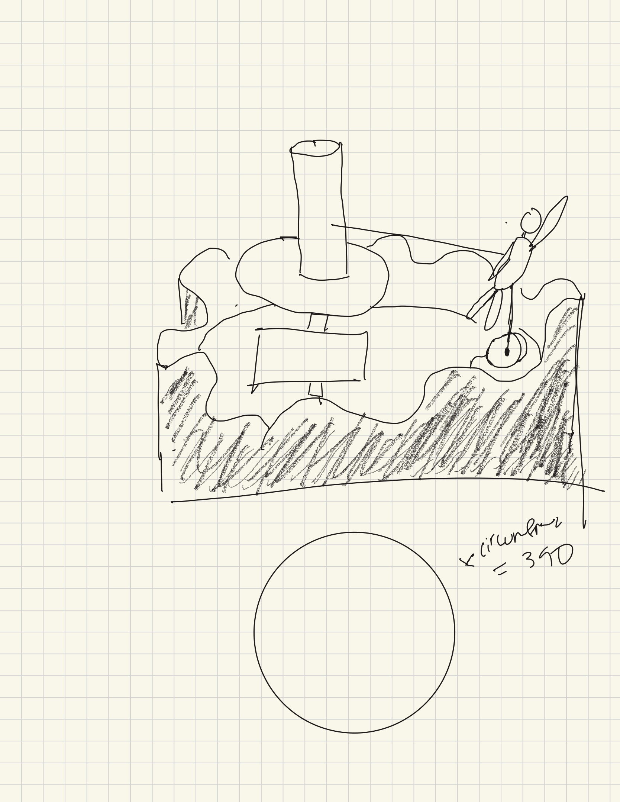
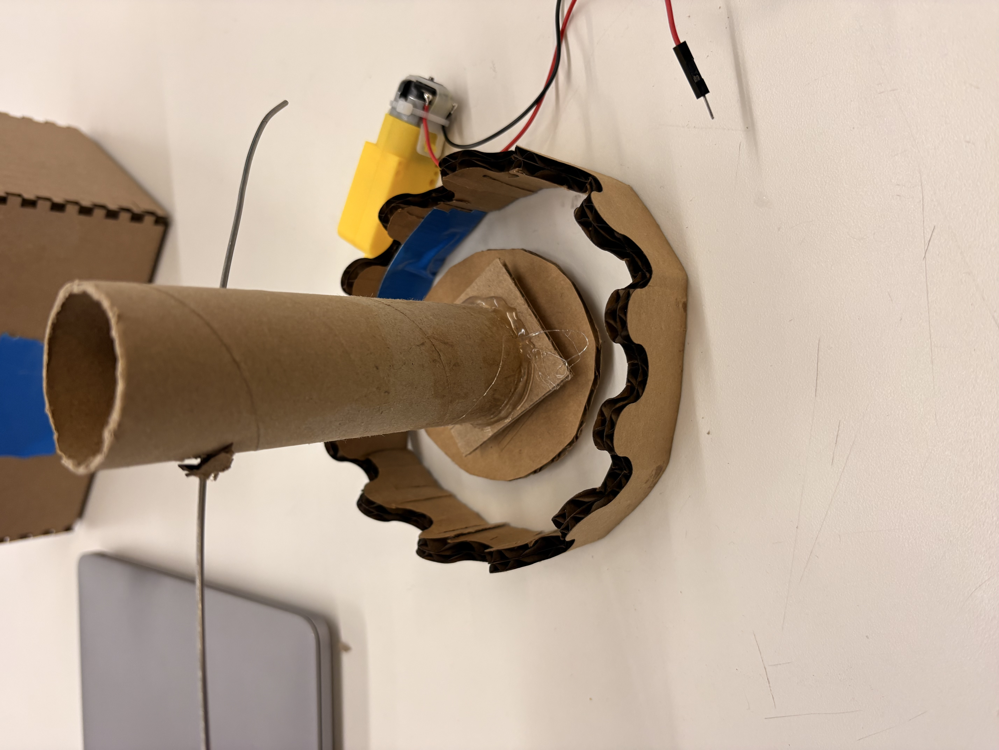
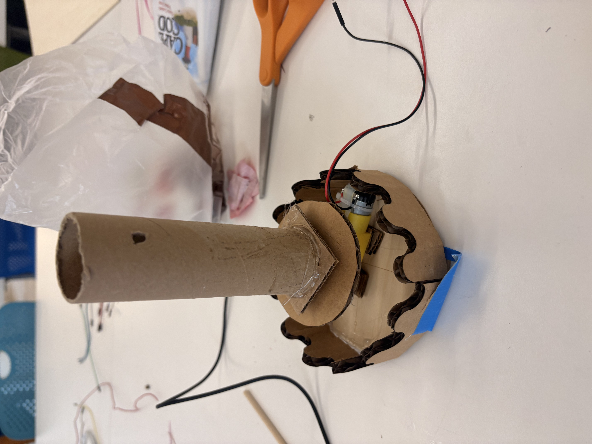
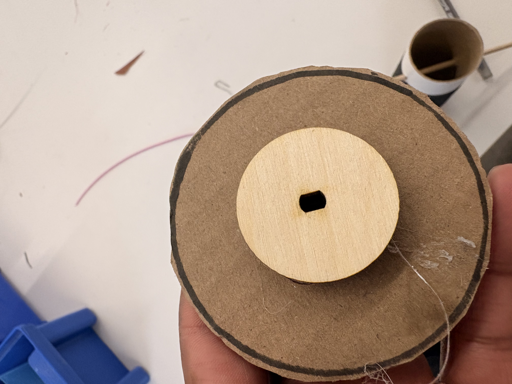
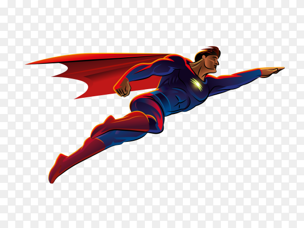
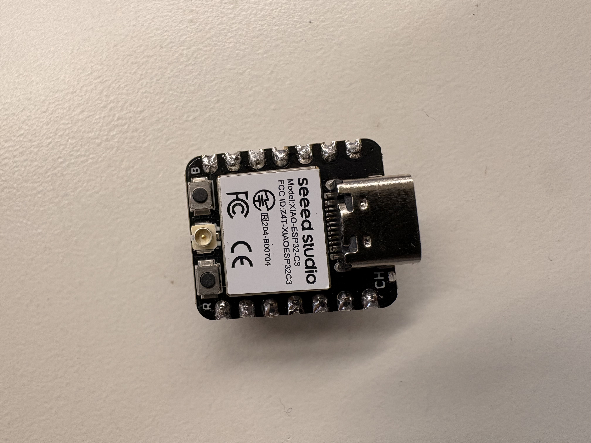

Files
<div class="textcontainer">
<p class="margin"> </p>
<h3>Week 3: Hand Tools and Fabrication</h3>
<h4>Kinetic Sculpture</h4>
<br>
This week I set out with the intention of making a spining superman statue that also moved vertically up and down while orbiting a set base. I planned on using the motor to spin the base and then have a pole
with a wheel at the bottom attached to the orbiting figure. This wheel would then follow a circular path similar to the automata from lab to cause the orbiting figure to travel up and down during the motion. In my first prototype I included slits in the back of the base cylinder to allow the stick holding the figure to be constrained to only up and down movement, while being tethered to a point opposite in the cylinder.
I laser cut the wave formation into cardboard, and cut the coupler and circular formations into wood. I did a lot of the combing of materials with hot glue.
<br> My initial mockup and 1st prototype are below:


<img src="Screenshot 2026-02-18 at 4.06.14 PM.png" alt="placeholder for image" width="640" height="480">


<br>
<br>
First protoype orbited well, however an into siginifcant issues with first prototype where the mechanism for the wheel to stay on the track would not stay on and kept falling. Part of this issues was due to the imperfections in the structure and that
not everything was based on very precise measurements. I tried to tape the track into a more symmetrical circle but was difficult with the material. In future could potentially try to have the wheel be more secured through retaining walls on either side of the <track class=""></track>
<br> After these issues decided to change scope of the sculture and only have it spin. So I then cleaned up the scultpture to have more secure bases, cylinder, and stick (changed to wooden dowel) to hold the superman. This resulted in an overall cleaner look
. Then designed the superman cut out in fusion by using a pre-exisiting image and fit spline tracing it before turning into a dxf. I then cut this into cardboard.
<img src="Screenshot 2026-02-18 at 2.32.58 PM.png" alt="placeholder for image" width=50% height= 50%>

<h4> Here is the final look (gif):</h4>
<img src="ezgif.com-video-to-gif-converter.gif" alt="placeholder for image" width=100% height= auto>
<p class = "margin"> </p>
<h4> Solder</h4>
Was able to solder pins to microcontroller. Here is a pic:

</div>